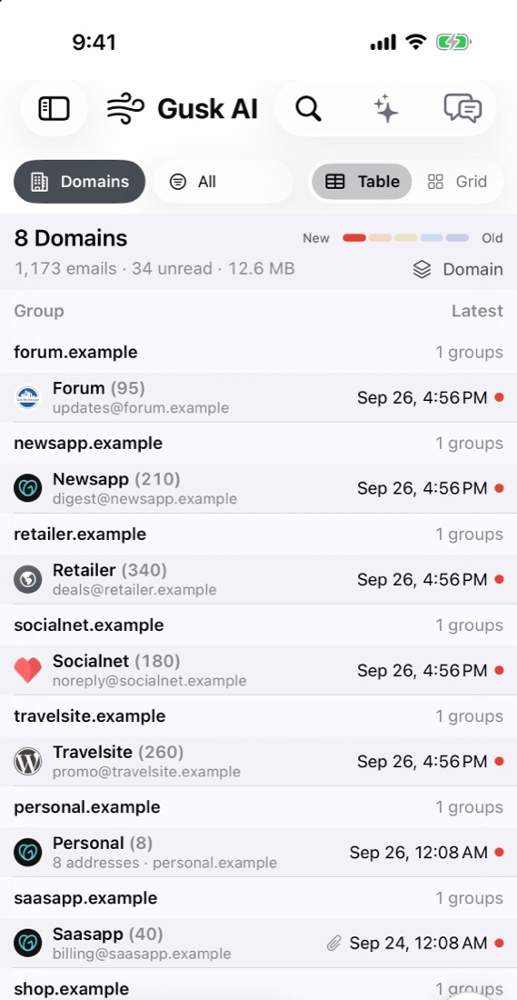
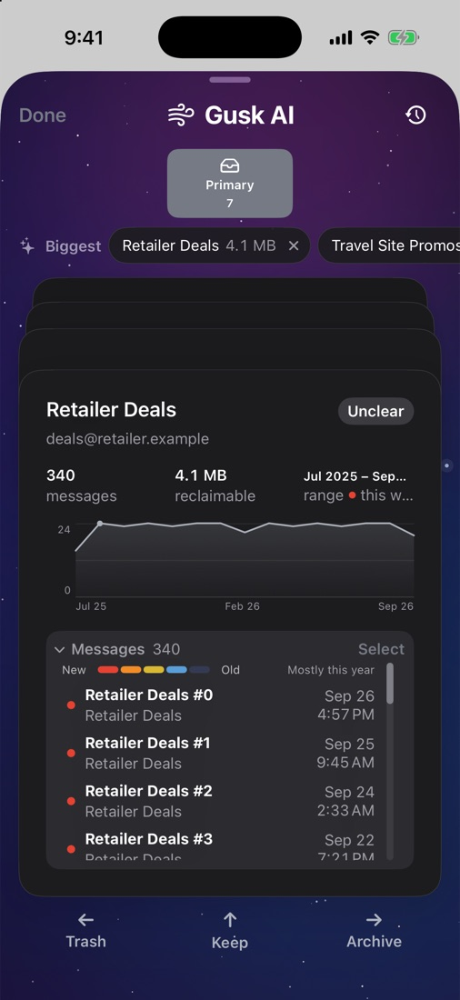
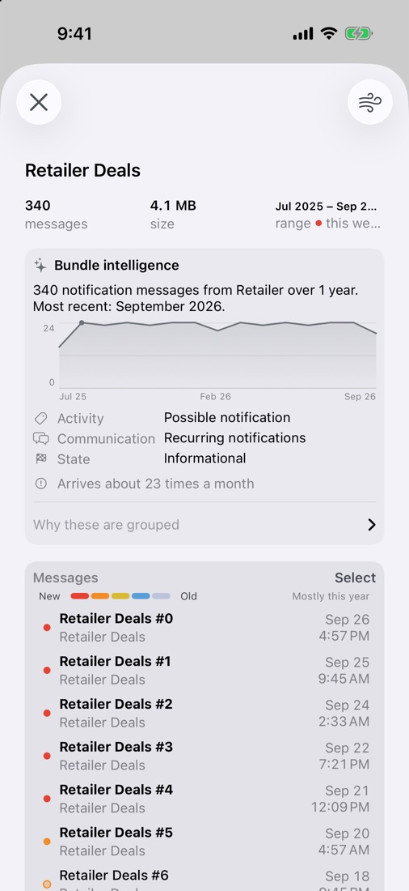
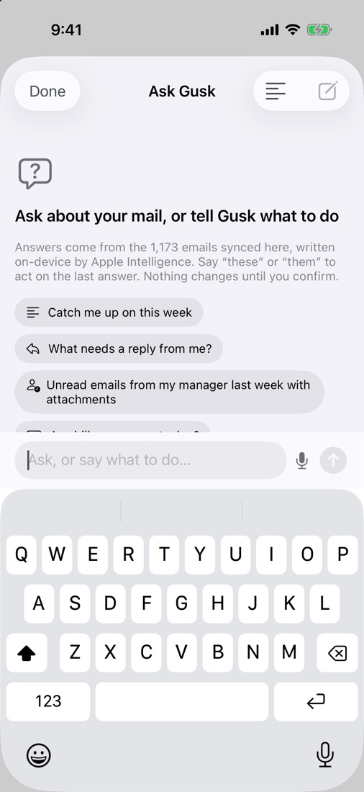
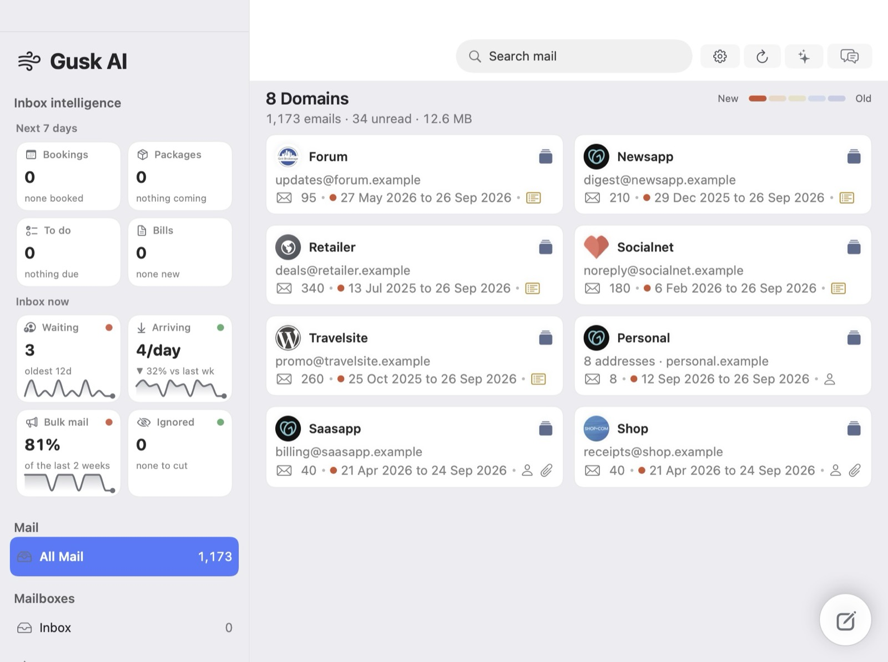
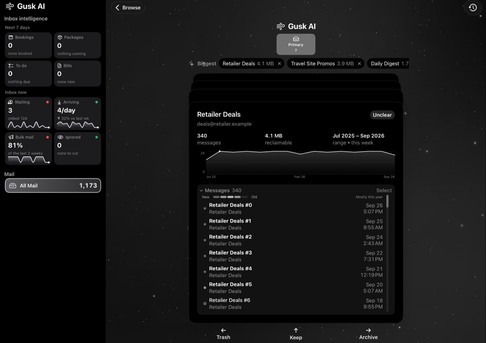

Sweep
Archive or trash a whole sender or domain with one swipe. You can always undo.
Gusk AI is a calm, private Gmail app for Mac, iPhone and iPad. It clears away the newsletters, promotions and notifications, so the email that matters is easy to find.
Mac · iPad · iPhone · Built for Gmail
A look inside
These are real screens from Gusk AI on iPhone, shown with sample mail.




Mac · iPad · iPhone
A full sidebar with inbox intelligence on Mac and iPad, and the same Sweep in your pocket. Your settings and signatures sync across all three.


Features
Everything you need to tame a busy inbox, and nothing that gets in the way.
Archive or trash a whole sender or domain with one swipe. You can always undo.
Ask “what needs a reply?” or “catch me up on this week.” Gusk can take action for you, and asks before it does.
Bookings, bills, packages and to-dos, pulled from your inbox into one view.
Rich-text replies, and signatures that follow you to every device.
Everything Gusk does
Every action that changes your mail runs only when you ask for it. Gusk never deletes mail permanently: trashed mail stays in Gmail’s Trash, where you can restore it for 30 days.
Google permissions
Gusk talks to Gmail directly from your device. It has no server, and the developer never receives your data.
gmail.modifyNeeded to read your messages so they can be listed, grouped and opened, and to archive, trash, label, star and mark them read or unread when you ask. Also used to send email and save drafts that you write.
gmail.settings.basicUsed only to create a Gmail filter when you choose to handle a sender’s future mail automatically.
Gusk’s use of information received from Google APIs adheres to the Google API Services User Data Policy, including the Limited Use requirements. You can revoke access at any time at myaccount.google.com/permissions. See the privacy policy for details.
Private by design
Gusk AI has no server. Your mail goes straight from Google to your device, and the AI features run on the device with Apple Intelligence. Read the privacy policy →